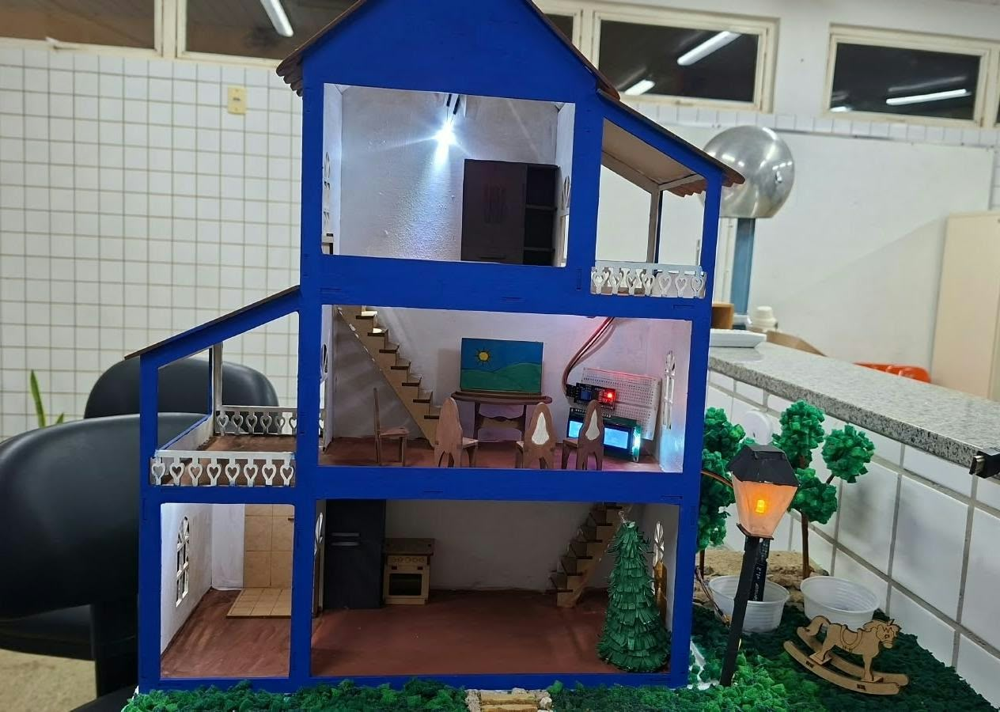
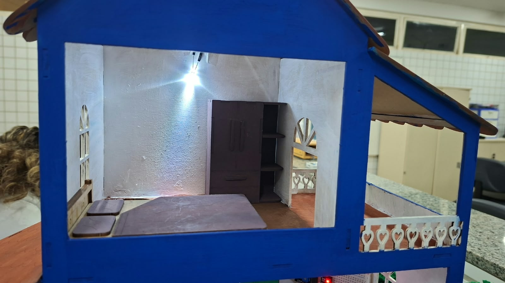
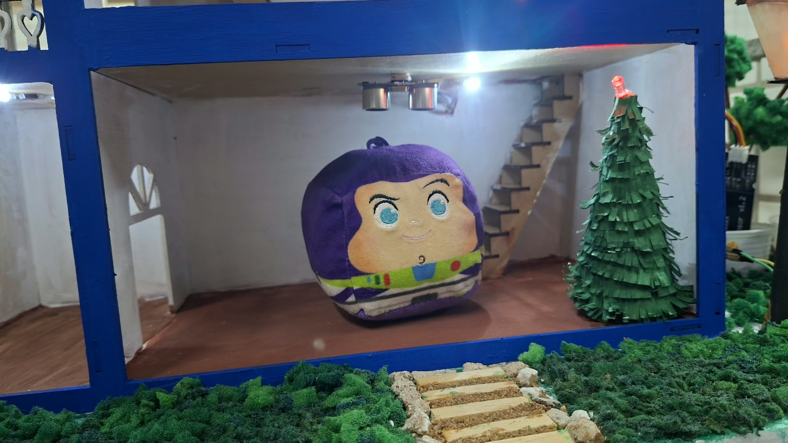
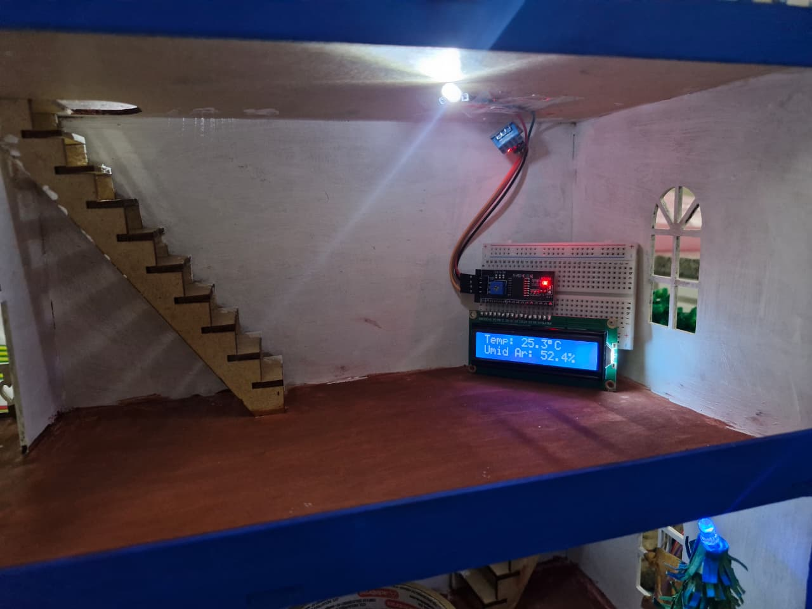
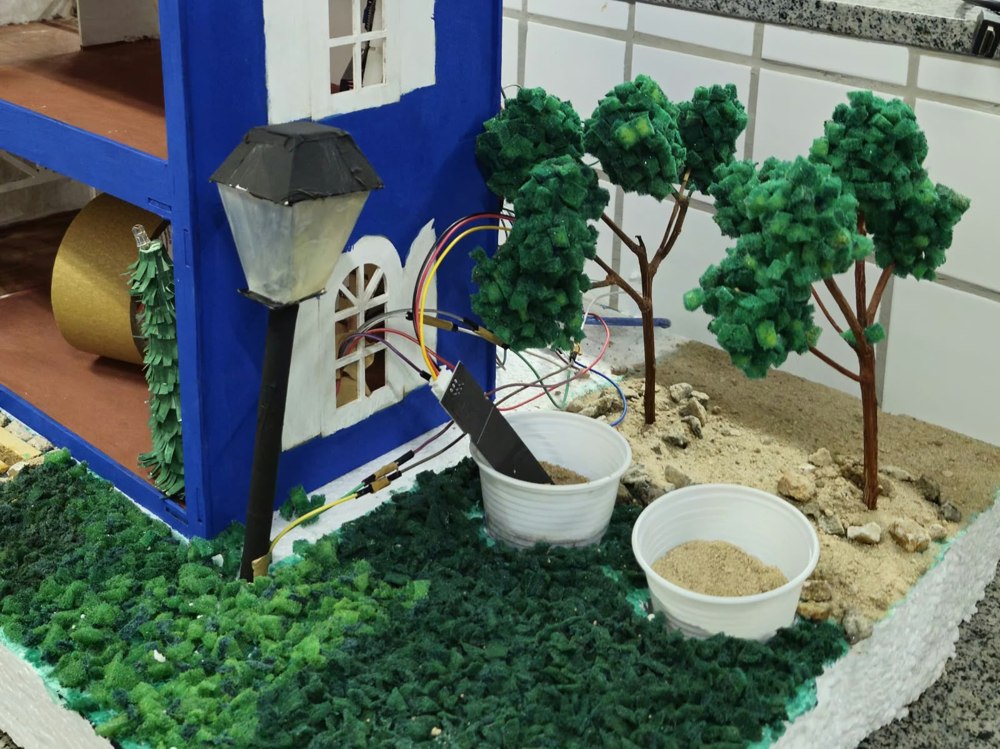
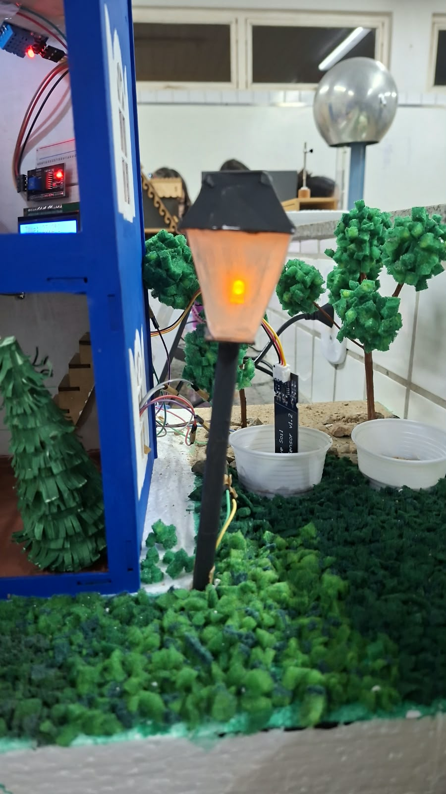

Casinha Inteligente
Tecnologia, inovação e sustentabilidade em um só lugar. Conheça nosso protótipo de uma casa automatizada!
Conhecer o projeto →
Sobre o projeto
Criamos o protótipo de uma casa automatizada utilizando tecnologia e programação para tornar o dia a dia mais prático, seguro e sustentável. A ideia do projeto é demonstrar como a automação residencial pode ser aplicada de forma criativa usando sensores e LEDs para monitorar o ambiente, economizar energia e cuidar de plantas e cômodos de forma autônoma.
Iluminação
Controle automático de LEDs.
Monitoramento
Controle de temperatura e umidade.
Sustentabilidade
Cuidado inteligente com as plantas.
Nossa Tecnologia
Conheça os sistemas automatizados presentes na nossa casa inteligente.

Iluminação dos cômodos
Todos os cômodos internos possuem LEDs controlados para garantir uma iluminação adequada.

Sensor Ultrassônico de Presença
Quando alguém entra na casa, o sensor detecta a presença e acende automaticamente o LED da cozinha e o LED da árvore de Natal.

Monitoramento de Clima
Um sensor de temperatura e umidade mede as condições climáticas internas e exibe os dados em tempo real em um visor LCD 16x2 com adaptador I2C.

Sensor de Umidade do Solo
Monitora a terra das plantas. Quando o solo fica muito seco, o sistema emite um alerta sonoro para avisar que precisa de água.

Sensor de Luminosidade (LDR)
Identifica quando o ambiente escurece e acende um LED automaticamente, funcionando como uma luz noturna inteligente.
Nossa Equipe
Uma equipe unida pela criatividade e pela tecnologia!
Jaciara Braga Santana
Lívia Giovanna Dias de Negreiros
Maria Eduarda de Macêdo Soares
Uma ideia, muitas possibilidades! 💙
Nosso projeto demonstra como a tecnologia pode transformar espaços e tornar o cotidiano mais prático, seguro e sustentável.